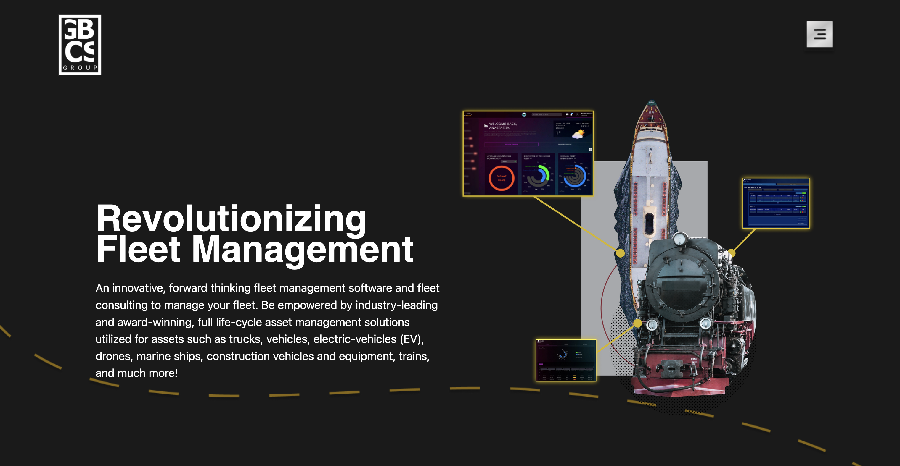

Alicia
Montgomery
front-end
developer
I am a recent graduate pursuing my web development dream.
I have been drawn to pretty things ever since I was young. When I was older, I understood that a human was behind those designs. One of the reasons I like front-end development is because I can take beautiful designs and turn them into functional "art." Taking someone's or my designs and bringing them to life is my favorite part of the process.
I recently graduated with a Master's in IT while working full-time. I am now working on my skills to become an upstanding front-end engineer.
When not working, I make art, create video games (and play them!), and watch anime.
Check out my Work!
Spa Website Redesign

GBCS Group Website Revamp
